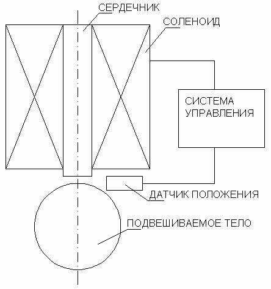
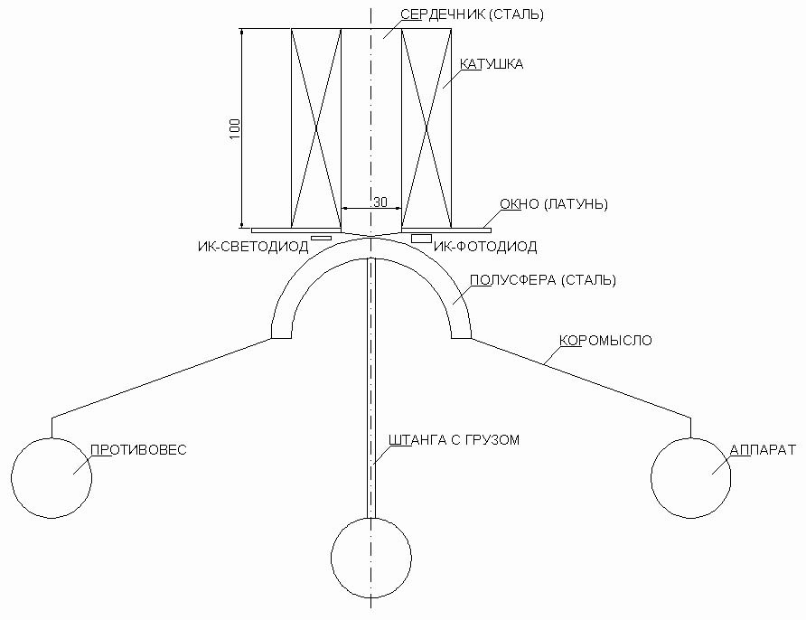
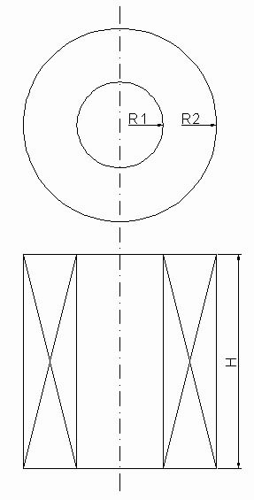
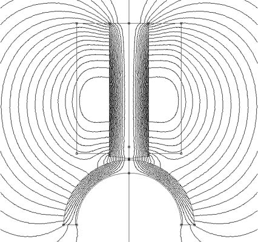
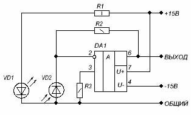
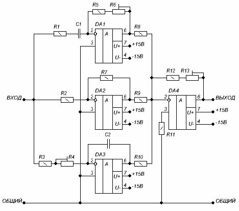
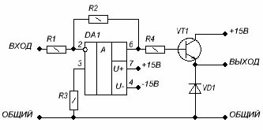

Расчет магнитного подвеса крутильных весов
1. Введение
Крутильные весы применяются при проведении физических экспериментов, требующих измерения малых сил или их моментов, например, при измерении гравитационной постоянной или изучении взаимодействия электрических зарядов. Они состоят из горизонтального коромысла, подвешенного на упругой нити. Такая конструкция не всегда обеспечивает требуемые параметры. Так, для проведения опытов с реактивными электроракетными двигателями требуется создать подвес, обеспечивающий минимальное трение. На нем должно размещаться оборудование (двигатель, прикрепленный к коромыслу с длиной плеча 40 … 50 см) массой до 5 ... 6 кг. Вся конструкция должна иметь возможность работать в вакууме. Двигатель дросселируется вплоть до тяги, составляющей единицы микроньютонов. Подвод СВЧ энергии к двигателю производится через бесконтактный вращающийся переход. Для реализации весов вместо нити было решено попробовать применить магнитный подвес [2].
Технические требования:
Известны конструкции магнитных подвесов с использованием кольцевых и цилиндрических постоянных магнитов [3]. Их недостатками являются, во-первых, наличие возникающих вследствие неоднородности постоянных магнитов равновесных и неравновесных положений, переход между которыми требует приложения существенных усилий (моментов), и, во-вторых, невозможность осуществления полного подвеса по всем степеням свободы. Магнитные подвесы с использованием постоянных магнитов и диамагнитных веществ (например, графита) позволяют осуществить полное подвешивание, но развиваемые ими усилия малы, поэтому подвешивание тел массой несколько килограммов может оказаться затруднительным. К тому же остается ограничение, связанное с неоднородностью постоянных магнитов. Таким образом, стоит задача – сконструировать активный (управляемый) магнитный подвес [1], максимально свободный от вышеприведенных недостатков и, желательно, работающий по минимуму степеней свободы. Недостатки активных магнитных подвесов, а именно, неоднородность магнитных полей (меньшая, чем в случае постоянных магнитов), способность к авторотации за счет вихревых токов (или самостоятельный переход в некоторые равновесные положения), возможно, удастся обойти за счет выбора конструкции и точности изготовления.
Одним из простейших активных магнитных подвесов является конструкция (рис. 1.1), состоящая из цилиндрического соленоида (катушки) с ферромагнитным сердечником (электромагнит), к которому снизу притягивается подвешиваемое тело – ферромагнитный шар. Зазор между шаром и сердечником контролируется с помощью датчика положения. Ток в катушке, требуемый для поддержания шара в равновесном подвешенном состоянии, задается электронной системой управления.

Рис. 1.1. Простой активный магнитный подвес.
Подвешенный шар может при этом свободно вращаться относительно оси симметрии системы. В качестве датчика положения проще всего использовать фотоэлектронный датчик. Система управления, как правило, строится по схеме ПИД-регулятора (пропорциональный интегрально-дифференциальный регулятор). Управление подвесом происходит по одной степени свободы – осевой. Расчеты показывают, что величина усилия несущественно уменьшается, если шар сделать полым (разумеется, толщина стенок сферы не должна быть слишком малой, чтобы не иметь существенного магнитного сопротивления). Так как вращение подвешенного шара производится только по одной степени свободы – вокруг оси, совпадающей с осью соленоида, то сферу можно заменить полусферой. Недостаток полусферы при использовании вместо сферы в магнитном подвесе – способность к опрокидыванию. Эту проблему предполагается решить выбором соответствующей конструкции прикрепленного к полусфере коромысла. Таким образом, в качестве расчетной можно принять конструкцию, изображенную на рис. 1.2.

Рис. 1.2. Конструкция рассчитываемого магнитного подвеса.
Использование сердечника с конусом на торце позволяет несколько увеличить радиальную жесткость подвеса ценой некоторого уменьшения осевой жесткости. Кроме того, возможно, таким образом удастся несколько уменьшить угловые колебания момента, возникающие при вращении подвеса. Для облегчения теплового режима и упрощения охлаждения соленоид с сердечником вынесен вовне вакуумной камеры, в которой находятся весы. В камеру через специальное окно, сделанное из латуни, заходит только торцевая часть сердечника. Предполагается, что влияние токопроводящего окна в качестве короткозамкнутого витка будет несущественным, зато оно сыграет положительную роль в успокоении колебаний подвеса (демпфировании). Плечи коромысла должны иметь некоторый наклон вниз, а также достаточный момент инерции, чтобы обеспечить возвращение подвеса в равновесное положение при покачивании коромысла. Кроме того, можно дополнить подвес вертикальной штангой с грузом на конце. В конструкции магнитного подвеса необходимо предусмотреть приспособление, на которое подвес будет опускаться при отключении тока в катушке, так называемый арретир.
2. Расчет усилия
Цилиндрический соленоид,
который планируется применить в магнитном подвесе, может быть охарактеризован
следующими параметрами (рис. 2.1): 
R1 - внутренний
радиус соленоида
R2 - внешний радиус соленоида
H - высота соленоида
D - диаметр обмоточного провода без изоляции (для проводов прямоугольного
сечения производится пересчет по формуле D=(4s/p)1/2,
где s - площадь поперечного сечения провода)
l
- фактор упаковки (отношение площади, занятой проводом в поперечном сечении
соленоида без учета изоляции, к площади поперечного сечения соленоида)
[4]
Рис. 2.1. Цилиндрический соленоид.
Рабочий зазор между полусферой и сердечником катушки можно выбрать равным примерно 0.5 мм, а максимальный зазор – примерно 1 мм (когда подвес в отсутствие тока в катушке опускается на арретир). В рабочем положении усилие, с которым сердечник притягивает полусферу с коромыслом должно быть равно ее весу при плотности тока в обмотке, обеспечивающей продолжительную работу подвеса. Кроме того, при максимальном зазоре развиваемое усилие должно быть достаточным, чтобы снять подвес с арретира и перевести его в рабочее положение.
Расчет магнитного поля и связанных с ним характеристик (усилия) производился для случая цилиндрического соленоида с размерами R1 = 0.015 м, R2 = 0.04 м, H = 0.1 м методом конечных элементов [5]. Соленоид имеет стальной сердечник диаметром 30 мм, длиной примерно 100 мм с коническим торцом. К сердечнику притягивается стальная полусфера диаметром 100 мм, толщина стенки 10 мм. Сталь сердечника и полусферы малоуглеродистая горячекатаная, свойства примерно соответствуют марке Ст20 или Ст45. Масса полусферы примерно 1 кг.
Так как предполагается работа соленоида в условиях естественного (или, тем более, принудительного) воздушного охлаждения, а толщина обмотки невелика, плотность тока в обмотке может достигать примерно 2.5 А/мм2 при неограниченной продолжительности работы. Результаты расчета усилия, развиваемого при указанной плотности тока и разных зазорах между полусферой и сердечником, приведены в таблице.
|
Зазор, мм |
Усилие, Н |
|
0.25 |
152 |
|
0.5 |
135 |
|
0.75 |
119 |
|
1.0 |
105 |
|
1.5 |
83 |
|
2.0 |
69 |
Распределение магнитного поля при зазоре в 1 мм между полусферой и сердечником катушки и плотности тока в обмотке 2.5 А/мм2 показано на рис. 2.2.

Рис. 2.2. Распределение магнитного поля в магнитном подвесе.
Произведенный расчет показывает, что силовые характеристики активного магнитного подвеса вполне достижимы при невысоких плотностях тока в обмотке.
3. Расчет катушки
Расчет числа витков N цилиндрического соленоида может быть произведен по формуле:
Активное сопротивление R находится следующим образом:
где r – удельное электрическое сопротивление обмоточного провода. При плотности тока в обмотках, равной J, сила тока I в проводе диаметром D составляет:
В соответствии с законом Ома:
где U – питающее напряжение. Тогда:
Итак, соотношение между питающим напряжением, плотностью тока в обмотках и параметрами соленоида выглядит следующим образом:
Отсюда, принимая в качестве питающего напряжения максимальное напряжение, которое может выдать система управления, а в качестве плотности тока – максимально допустимую для продолжительной работы плотность тока в обмотке, можно найти диаметр обмоточного провода:
Максимальная потребляемая от источника питания и рассеиваемая в обмотке мощность P определится формулой:
Полагая U = 15 В, J = 2.5 А/мм2, r = 1.67 ∙ 10-8 Ом ∙ м (медный провод), l = 0.6 получим:
Максимальный потребляемый от источника питания ток составит примерно 15/3.4 ≈ 4.4 А, максимальная потребляемая и рассеиваемая мощность – 152/3.4 ≈ 66 Вт. В режиме работы (активное подвешивание) потребляемый ток и рассеиваемая мощность будут существенно меньше своих максимальных значений.
Итак, окончательные параметры соленоида на
напряжение питания 15 В:
Диаметр отверстия 30 мм, внешний диаметр 80 мм, высота 100 мм.
Обмоточный провод медный диаметром 1.2 мм 1326 витков. Намотка виток к витку с
пропиткой эпоксидной смолой для фиксации обмотки и улучшения теплопроводности.
Начало и конец намотки – на торце, противоположном тому, где находится подвес,
чтобы снизить неоднородность магнитного поля.
Активное сопротивление обмотки 3.4 Ом.
Индуктивность соленоида без сердечника около 30 мГн.
Источник питания двухполярный +15 В, при этом источник отрицательного напряжения используется только для питания датчика положения и системы управления и может иметь небольшую мощность, а источник положительного напряжения используется для питания соленоида и должен обеспечивать выходной ток порядка 5 А.
4. Фотоэлектронный датчик положения
Наиболее простым датчиком положения является фотоэлектронный датчик (на основе пары инфракрасный светодиод – инфракрасный фотодиод), работающий на просвет в зазоре между подвешиваемой полусферой и сердечником соленоида. При уменьшении зазора световой поток, достигающий фотодиода уменьшается, а при увеличении – соответственно увеличивается. Сигнал на выходе электронного преобразователя прямо пропорционален световому потоку, достигающему фотодиода. В первом приближении можно считать, что выходной сигнал фотоэлектронного датчика прямо пропорционален зазору между сердечником и полусферой. Один из вариантов электронной схемы представлен на рис. 4.1[8].

Рис. 4.1. Схема электрическая принципиальная фотоэлектронного датчика положения.
Ток через светодиод VD1 задается токоограничительным резистором R1. Сигнал фотодиода VD2 поступает на преобразователь ток-напряжение, собранный на операционном усилителе (ОУ) DA1. Коэффициент преобразования задается величиной резистора R2. Выходной сигнал в первом приближении пропорционален зазору между сердечником соленоида и подвешенной полусферой.
5. Электронная система управления
Система управления может быть построена по схеме ПИД-регулятора [6] (рис. 5.1).

Рис. 5.1. Схема электрическая принципиальная ПИД-регулятора.
ПИД-регулятор состоит из трех звеньев – пропорционального, интегрирующего и дифференциального, собранных на ОУ DA1 – DA4. Все параметры регулятора можно изменять независимо друг от друга с помощью подстроечных резисторов R4, R6, R13, чтобы добиться оптимальной работы магнитного подвеса. Цепь R3R4C2 определяет частоту среза интегрирующего звена, цепь C1R5R6 – частоту среза дифференцирующего звена, с помощью резисторов R12R13 устанавливается коэффициент усиления. В схеме R2 = R7, R8 = R9 = R10. Соленоид следует подключать к выходу ПИД-регулятора через усилитель мощности, возможная схема которого показана на рис. 5.2.

Рис. 5.2. Схема электрическая принципиальная усилителя мощности.
Усилитель мощности построен по схеме инвертирующего усилителя на ОУ DA1. Коэффициент усиления задается соотношением R2/R1. Выходной каскад на транзисторе VT1 однополярный, так как в данном типе подвеса не требуется реверс тока в соленоиде. Соленоид подвеса подключается к контактам ВЫХОД и ОБЩИЙ. Диод VD1 выполняет функцию демпфирования обмотки.
6. Сентенции по поводу погрешностей
Усилие, с которым магнитное поле катушки с сердечником действует на подвешиваемое тело, равно весу тела. Можно предположить, что, если на подвешиваемом теле имеется дефект, то отклонение распределения усилия в данной точке по порядку величины будет равно весу дефекта. То есть угловые колебания момента будут определяться произведением веса дефекта на его расстояние от оси подвеса. Требуемая неравномерность момента в зависимости от угла поворота не хуже 0.1 мкН ∙ м = 0.1 мН ∙ мм определяет вес дефектов, располагаемых на расстоянии 1 мм от оси, величиной не более 0.1 мН (10 мг) и на расстоянии 10 мм от оси – не более 0.01 мН (1 мг). 1 мг – это вес стального шарика диаметром примерно 0.5 мм. Таким образом, при точности обработки стальных частей подвеса (сердечника и полусферы) 10 мкм можно ожидать, что, по крайней мере, эти детали не будут создавать существенных погрешностей при взаимном повороте друг относительно друга, разумеется, при условии, что в используемом для их изготовления материале отсутствуют включения и пустоты вышеуказанных размеров и масс. Так как в исходном материале (горячекатаная сталь) допускается существование дефектов объемом до 1 мм3, то может понадобиться подбор деталей из нескольких заранее изготовленных с минимальным влиянием дефектов.
По вопросу расчета и разработки конкретных конструкций магнитных подшипников и подвесов обращайтесь к автору (раздел Контактная информация).
Ссылки:
04.10.2015
Альтернативные источники
энергии
Компьютеры и
Интернет
Магнитные поля
Механотронные системы
Перспективные
разработки
Электроника и
технология